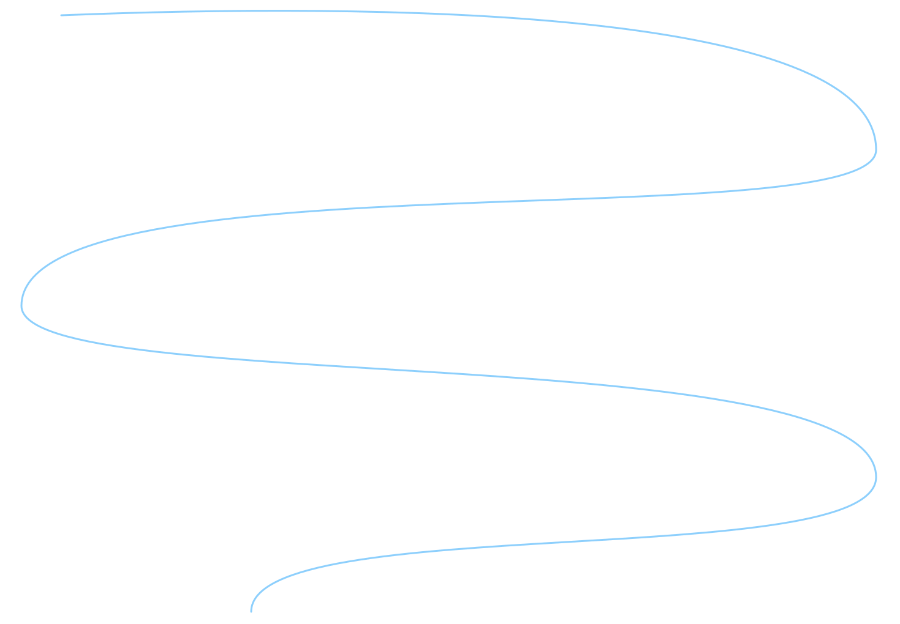
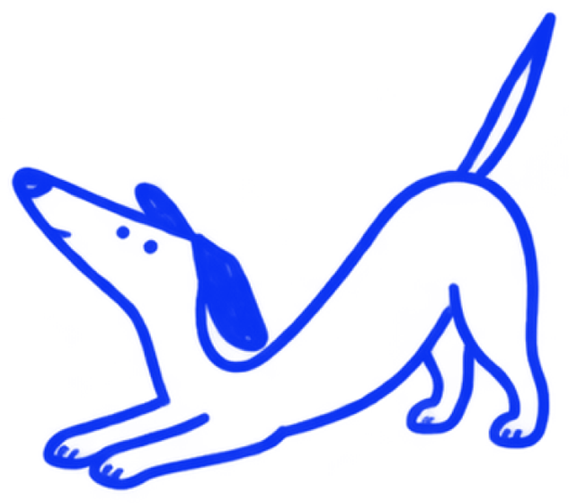

Удаление опухоли семенника

У кошек и собак
Удаление семенников при опухоли. Риск опухоли выше у крипторхов.
Хирург: Владислав Белорыбец
15 000 ₽
- Длительность
- 30–60 минут
- Анестезия
- Общий наркоз
- Стационар
- В день операции
- Снятие швов
- Через 10–14 дней
- Восстановление
- 2 недели
Что это
за операция
Опухоли семенников — одни из самых частых опухолей у пожилых некастрированных кобелей. Риск во много раз выше у крипторхов, у которых семенник остался в паху или в животе.
Что важно знать
Некоторые опухоли выделяют эстрогены: у кобеля появляются облысение, увеличение сосков, привлекательность для других кобелей, а иногда — угнетение костного мозга.
Когда нужна
операция
- 01Увеличение или уплотнение семенника
- 02Опухоль неопустившегося семенника
- 03Признаки гормональной активности опухоли (облысение, увеличение сосков у кобеля)
Срочно к врачу
Семенник увеличился или стал плотным
Облысение по бокам, увеличение сосков у кобеля
Бледность, кровоизлияния на коже
Позвоните в часы приёма или задайте вопрос врачу с пометкой «Срочно» — посмотрю его первым.
Одна операция.
Понятная стоимость.
| Удаление опухоли семенника | 15 000 ₽ |
|---|
Без наркоза, анализов, стационара и препаратов.
Точную смету врач называет после осмотра.
Понятно
Смета и план операции —
до её начала.
До операции —
Всё
по плану
8–12
часов голода
перед наркозом
- ×УЗИ мошонки и брюшной полости
- ×Общий анализ крови: при эстроген-секретирующих опухолях бывает анемия
- ×Осмотр и сбор анамнеза: какие болезни были, какие лекарства принимает питомец
- ×Анализы крови, а по показаниям — УЗИ, рентген, ЭКГ
Воду —
по рекомендации
врача.
Смета и план операции — до её начала.
Как проходит
операция

- 01Наркоз
- 02Удаление обоих семенников — через мошонку или живот, если семенник не опустился
- 03Гистология
Восстановление
Шаг за шагом
Как после кастрации: воротник, ограничение активности, снятие швов.
- ДеньоперацииПробуждение под наблюдением, обезболивание. Чаще всего домой в тот же день.
- 1–3деньОбезболивающие по схеме, ежедневный осмотр шва, ограничение активности.
- 7–14деньПриходит результат гистологии. Обсуждаем, нужно ли дальнейшее лечение или достаточно наблюдения.
- 10–14деньСнятие швов и контрольный осмотр.
- ДальшеПри злокачественных опухолях — контрольные осмотры по графику, который составит врач.
Сроки ориентировочные: врач скорректирует их по ходу восстановления.

Теперь вы дома.
Забота — в простых вещах.
Что важно помнить
- 01Воротник или послеоперационная попона — пока не снимут швы
- 02Обезболивающие и другие препараты — строго по схеме, не отменяйте их сами
- 03Каждый день осматривайте шов: в первые дни допустимы лёгкое покраснение и небольшой отёк
- 04В первые сутки кормите небольшими порциями
По схеме врача.

Когда нужен
контроль врача

Большинство опухолей семенника у собак доброкачественные; при злокачественных нужно стадирование.
Покажите питомца врачу, если заметили:
Температура выше 39,5 °C.
Отказ от еды больше суток, повторная рвота.
- Кровотечение из раны или повязки.
- Шов разошёлся или из него выделяется гной.
- Выраженная вялость, бледные дёсны, тяжёлое дыхание.
Играть.
Гулять.
Жить.

Прогноз
Большинство опухолей семенников у собак после удаления не возвращаются и не дают метастазов. Признаки избытка гормонов обычно проходят за несколько недель.
У каждого питомца — свой темп.
Важно знать
Почему удаляют оба семенника?
Опухоль может развиться и во втором семеннике, а кастрация устраняет гормональные причины.
Сколько длится операция?
Обычно 30–60 минут. Точное время зависит от размера питомца и того, что хирург увидит во время операции.
Когда можно забрать питомца домой?
В день операции. Домой отпускаем, когда питомец проснулся, стабилен и вы получили письменные рекомендации.
Когда снимают швы?
Через 10–14 дней. Если швы внутрикожные или рассасывающиеся, снимать их не нужно.
Источники
- Vail D. M., Thamm D. H., Liptak J. M. (ред.). Withrow & MacEwen’s Small Animal Clinical Oncology. 6-е изд. St. Louis: Elsevier, 2020.
- Fossum T. W. (ред.). Small Animal Surgery. 5-е изд. Philadelphia: Elsevier, 2019.
Больше по теме
- Ампутация пальца при опухоли
Удаление пальца, поражённого опухолью или хроническим воспалением кости.
от 5 750 ₽ - Вылущивание липомы
Удаление доброкачественной жировой опухоли, если она мешает, быстро растёт или расположена неудобно.
от 5 750 ₽ - Иссечение множественных опухолей кожи
Удаление нескольких кожных образований за один наркоз.
от 10 800 ₽
Ещё статьи по теме
Обсудим
ваш случай
Пришлите анализы, снимки и заключения — посмотрю и отвечу, нужна ли операция и как к ней подготовиться.